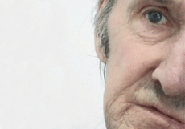

|
LOST & FOUND: JIM LEE
Luke Seomore & Joseph Bull | GB 2006 | 15 min.
Format: Beta SP
Material: Super-8, 16mm, DV
Original language: English
Script: Luke Seomore, Joseph Bull
Camera: Luke Seomore, Joseph Bull
Editing: Luke Seomore, Joseph Bull
Sound: Luke Seomore, Joseph Bull
Animation: Luke Seomore, Joseph Bull
Production: Luke Seomore
www.instituteforeyes.co.uk
German Premiere
Jim Lee was born in a field in Kent on November 1st 1936. Abandoned from birth, his childhood memories were a blur. "Lost & Found" follows his path as he travels across the ever changing face of Britain, drifting through various jobs, his life in constant flux. The film was created entirely from long forgotten super-8-footage recovered from around the UK. Set to a haunting soundtrack by the directors, "Lost & Found" tells the honest and unique story of a man forgotten by society.
Luke Seomore & Joseph Bull Following a childhood spent under suburban Essex skies, Luke Seomore and Joseph Bull
began collaborating at art college in East London, bringing a singularly British take to their elegant and hypnotic filmmaking. The 27 year olds’ DIY ethic includes the composition of their own soundtracks which reflect their often dark and dreamlike visual images, an interest that has lead them to create a number of music promos.
Films: Male Caucasian 2002 | Lost & Found: Jim Lee 2006 | Handsworth Conversations 2007
back
|